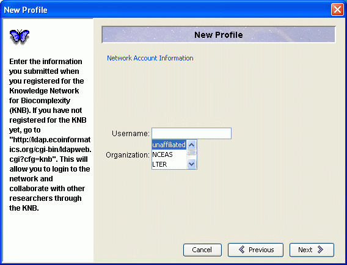

Morpho User Guide
|
Morpho User Guide
|
 Introduction The
Main Welcome Screen Introduction The
Main Welcome Screen |
| Getting Started |
The first thing you should do is install the Morpho software. Go to http://knb.ecoinformatics.org/morphoportal.jsp and choose the appropriate link. You will have the option of downloading Java along with Morpho if you do not already have it. Follow the directions in the installer.
After installing Morpho (but before using Morpho), register yourself on the KNB web site. Go to knb.ecoinformatics.org and fill out the form pictured below. Write down your name and password somewhere secure.  Open Morpho by double-clicking on its icon.
The first time you execute Morpho, you will be asked to create a new
profile. This profile allows you to use Morpho locally on your personal
computer and, once registered for the KNB network (see preceding "Register
for the KNB" section), will allow you to create, access, edit and
search for data sets on the KNB network. Enter your profile name, your first and last names, and a password under "Basic Information" in the New Profile screen, pictured below. Your profile name does not have to be the same as your Metacat (KNB) network username.
Click "Next" to move on to the "Metacat Account Information" screen, pictured below. Here you should enter the Metacat username and the organization name which you registered on the knb.ecoinformatics.org site.

Click "Next" to move to the "Miscellaneous Information" screen, pictured below. The identifier prefix that you enter will become the prefix of your stored metadata file names. For example, jdoe.xml.
Click "Finished" to move on to the "Metacat Login" screen, pictured below, where you should enter your Metacat password. Alternatively, you can login on the main welcome screen of Morpho, described in the next section.

! By entering your password and clicking the "Login" button you will be able to create, edit, search, access and manage data that is stored both locally (on your computer) and on the KNB network. By selecting "Skip Login" you will be able to do all the previous operations locally, and may search for data sets on the KNB network. However, you will not be allowed to create or edit data sets on the KNB network if you are not logged in.
The next screen you will see after logging in is The Main Welcome Screen. Read about it in the next section. |
| Introduction The
Main Welcome Screen |